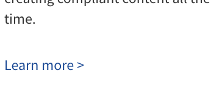
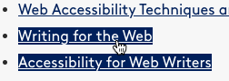
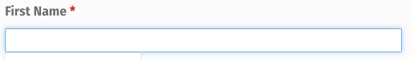
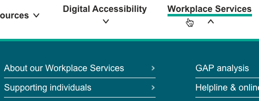

Accessibility test validation
If experts fail a test, is the test broken?
Introduction
Almost everybody in the world wants or needs to use digital technology, and one out of four to five persons has a disability. Persons with disabilities can use digital technology more successfully if it incorporates the standards and techniques of digital accessibility. Accessible websites typically work better for all users, not only those with disabilities, and are also easier to discover in web searches. The pressures for accessibility include compliance with laws and regulations, as well.
To ensure that digital products are accessible, one tests them. A valid test finds all the faults that it is intended to find and does not find any fault unless it really exists. In other words, it reports neither false negatives nor false positives. But, just as you cannot assume a website is accessible without testing it, you also cannot assume that any test is valid without testing (i.e. validating) the test.
Seeking a gold standard
Consider the problem of false positives (wrongly reporting a fault). To check a test for them, it would be ideal to have a body of digital products that are known to be completely accessible. Then one could perform tests on those products and expect the tests to report no faults. Such a set of perfect products could be considered a gold standard of accessibility.
As a first step, it is common to construct artifacts for test validation. If one creates a test, one can also create products that should pass the test and then perform the test on those products. If the test reports a fault, one can investigate the cause. But there is a risk of making the validator too easy. A gold standard that others have created would validate more trustably.
A natural candidate for an independent gold standard is a set of digital products created by accessibility experts. They should know how to make things accessible. Their own artifacts should be accessible. If, for example, they are in the business of accessibility consulting, they would be risking their reputation by creating an inaccessible website to market their services.
Testing a theory of testing a test
Let us put this idea into practice and discover how well it works.
I have created a battery of eleven accessibility tests named Combo11
(run by the Autotest application). I started testing it by trying to code a perfectly accessible web page and debugging with it. Once that page passed all the tests, I identified a set of 41 web pages produced by accessibility experts, to serve, potentially, as an independent gold standard. I ran Combo11 on those 41 pages, and it reported deficit scores. A score of 0 indicates that a page has passed all the tests. Any deficit score greater than 0 indicates that at least one test has found at least one fault on the page.
Here are the results:
| Page | Deficit as a | |
|---|---|---|
| Number | Bar | |
| WebAIM | 43 | |
| W3C WAI-ARIA | 102 | |
| U.S. Web Design System | 102 | |
| IAAP | 105 | |
| Digital Accessibility Centre | 117 | |
| Barrier Break | 121 | |
| mindscreen | 124 | |
| Funka | 133 | |
| Zugang für alle | 138 | |
| UsableNet | 143 | |
| Converge Accessibility | 158 | |
| Knowbility | 163 | |
| American Printing House | 187 | |
| Tenon | 193 | |
| eSSENTIAL Accessibility | 211 | |
| AccessibilityOz | 215 | |
| Level Access | 228 | |
| Equal Entry | 228 | |
| Evinced | 229 | |
| Accessibility Shield | 234 | |
| PEAT | 252 | |
| Mozilla | 270 | |
| WeCo | 277 | |
| CSUN Center on Disabilities | 300 | |
| Online ADA | 310 | |
| Fundación Hearcolors | 312 | |
| Überwachungsstelle des BFIT-Bund | 339 | |
| My Blind Spot | 364 | |
| AbilityNet | 472 | |
| Atos | 477 | |
| AudioEye | 577 | |
| Crawford Technologies | 623 | |
| Microassist | 628 | |
| Georgia Tech CIDI | 660 | |
| Accessible Web | 919 | |
| TPGi | 1012 | |
| Vision Australia | 1014 | |
| Viscardi Center | 1100 | |
| Deque | 1239 | |
| Siteimprove | 2292 | |
| AccessiBe | 3097 | |
The table above shows that all 41 independent expert pages failed at least one test. Why? There are three possible explanations:
- The tests are correct, and the pages are faulty. Combo11 is reporting real faults.
- The pages are accessible, and tests are faulty. Combo11 is reporting false positives.
- Accessibility is variously interpreted. The page creators consider their pages accessible, but Combo11 disagrees.
Neither a test nor a web page is likely to be perfect, and there are legitimate differences of interpretation of perfection. Therefore, all three explanations are likely appropriate for some of the reported faults.
Combo11 is a combination of 11 tests. Here is a list of them. For each test, the number of pages failing the test is shown.
| Test | Failing pages |
|---|---|
| styleDiff | 41 |
| wave1 | 40 |
| bulk | 39 |
| linkUl | 35 |
| axe | 34 |
| focOl | 34 |
| roleS | 31 |
| focOp | 29 |
| hover | 13 |
| labClash | 10 |
| radioSet | 0 |
Two of these tests are actually batteries of tests created by other projects: axe (Axe by Deque) and wave1 (WAVE by WebAIM). The other eight tests are custom-created.
Inspecting
To begin validating this battery of tests, let us inspect a few reported faults.
Roles
Here is a piece of one of the 41 pages:
They look like 3 buttons, but in fact they are links, created with the HTML a element. An a element in HTML has the role link. But this page changes the role of the first two links by adding the attribute role="button" to them. So now those two links have the role of button, while the third one still has the role of link.
The roleS test reports these role reassignments as faults. In HTML, the button element automatically has the button role. The test considers it a poor practice for accessibility to change the role of an HTML element when, instead, one could have used the element that already has the role.
This rejection has a reasonable basis. A role implies particular behaviors. Giving an element a button role is a promise that the element will behave exactly like a button. But such a promise is difficult to keep, because element behaviors are complex. In fact, the page breaks its promise to make the first two links behave like buttons. A user can click a button not only with a mouse, but also with either the Enter key or the Space key (after using the Tab key to move to the button). But, for these two links with the button role, the Space key scrolls the page instead, as it normally does. Promise broken. Reassigning roles also complicates the code and makes it harder to test and, when somebody else revises it later, more likely to break.
Styles
The same page that contains the Read More
link shown above also contains this Learn more
link.

Both are links, without any special role assignment. But they look very different. The styleDiff test faults the page for giving dissimilar style properties (and thus dissimilar appearances) to its links. (It does the same for buttons and the six levels of headings.) The test considers this a poor practice for accessibility. It complicates the user’s task of identifying items on the page. It makes user mistakes more likely. And these harms will tend particularly to befall users with visual, memory, attention, or learning disabilities.
Focus indicators
Using the Tab key to move around a page changes the focus. The element that has the focus is the one the user will act on if the user presses an appropriate key. On an accessible page, the current focus is always made visible, with a focus indicator. The standard focus indicator is an outline. (Navigate on this page with your Tab key to see the outline move.) The focOl test considers it a poor practice to hide the outline or replace it with some other focus indicator. The idea is that users have learned to recognize focus by the outline, and using some other indicator will tend to confuse them.
Here is a list of links that have failed the focOl test.

The third link has the focus. The page is designed to show focus on a link by inverting its color style. The link changes from blue on white to white on blue. Not only must the user learn to recognize this nonstandard focus indicator, but the page uses exactly the same indicator to show that the user is hovering over a link with the mouse. The second link here is being hovered over. Which one is in focus, and which one is being hovered over? It isn’t obvious. But pressing the Enter key will follow the focused link, not the hovered link. So using the same indicator for two different purposes can confuse the user and lead to mistakes.
Labels
When an accessible form asks the user to input text, the form tells the user what information is requested. Preceding the input field with explanatory text works well for some users, but not all. Accessibility standards require input labels to be formally specified, so other software can help users understand forms.
Here is an input field on one of the pages, asking for the user’s first name.

The HTML code for this input makes the phrase First Name
a label for the input. However, this labeling fails the labClash test, because the code, shown below, uses two different and incompatible labeling methods. for="fld_8768091_1" and aria-labelledby="fld_8768091Label" are competing to perform the same function.
<div data-field-wrapper="fld_8768091" class="form-group" id="fld_8768091_1-wrap">
<label id="fld_8768091Label" for="fld_8768091_1" class="control-label">First Name <span aria-hidden="true" role="presentation" class="field_required" style="color:#ee0000;">*</span></label>
<div class="">
<input required="" type="text" data-field="fld_8768091" class=" form-control" id="fld_8768091_1" name="fld_8768091" value="" data-type="text" aria-required="true" aria-labelledby="fld_8768091Label" field_signature="3876002848" form_signature="10360417896781115281"> </div>
</div>
When this mistake is made, the user’s equipment is expected to pay attention to one of the labeling methods and disregard the other. But this conflict could do harm if the user’s equipment is faulty. And such a coding error increases the cost and fragility of future code maintenance and testing. So the labClash test considers it an accessibility fault.
Keyboard navigation
Accessible web pages do not assume that users can hover, click, and drag. Some users prefer to navigate entirely with a keyboard. Others must do so, since a mouse, trackpad, or joystick may be impractical if you are blind or have very limited motor control. In such cases, users navigate with keyboard keys (or with special devices that pretend to be keyboards) to place the focus on an element, and they then use other keyboard keys to operate on the element. One pattern is to use the Tab key to navigate and the Enter key to operate. But the rules require or permit other keys to be used under particular conditions.
The focOp test reports a fault whenever a page contains an element that the user expects to be able to operate on, but the standard procedures for keyboard navigation cannot put that element into focus.
The three elements shown below appear on one of the pages.
The first two are links, and the last is a div element with the role of button. The intent of the button is to rotate the logo links in a carousel, so that eventually you can see each link. But the rotation button is not coded to indicate that it rotates a carousel. So, when the focOp test is trying to navigate to all operable elements, it does not use that button. These two links are initially hidden and are never rotated into visibility, so they never get focused. The focOp test reports them as operable elements that are unreachable by keyboard.
Mouse navigation
Adding new content to a web page when a user moves a mouse is likely to disorient some users, especially if they are easily startled or they have difficulty precisely controlling the mouse, seeing the page, or keeping track of what they are attending to. Some web pages pop menus open when the user hovers over menu titles. The idea is that the user will keep moving the mouse to one of the menu items and click it. But that action can fail if the user moves too slowly or erratically.

One of the expert pages contains the menu bar shown above. The Workplace Services
menu is open, because the mouse is hovering over its title. Suppose you want to move the mouse over to the About our Workplace Services
item and click it. As you move the mouse left, it is likely to pass through the space occupied by the next menu’s title, Digital Accessibility
. If it does, then suddenly the item you want to click will disappear and the next menu will open instead. The same problem can arise if you move the mouse cursor aside in order to read the menu title.
While such pop-up menus can be made more accessible in various ways, the result is a complex interface that is hard to use or annoying for some persons, while also being harder to test. The hover test of Combo11 considers it an accessibility fault for a page to add more visible content in reaction to any element being hovered over.
Omissions
The examples above are real faults if you agree with the tests, false positives if you consider the tests too strict, or matters of interpretation if you are on the fence.
Combo11 contains additional tests not discussed above, but it still only begins to cover the requirements for an accessible web page. These 41 pages, despite their expert authorship, may contain additional accessibility faults that Combo11 is not designed to detect—or false negatives: faults that it erroneously overlooks.
One example is the lack of form-completion help to users. The input field shown above should, according to one accessibility standard, contain an autocomplete="given-name" attribute. That would formally specify what the input field needs, so a user’s software can populate the field. That is particularly valuable for users with mobility or memory disabilities. Combo11 does not (yet) test for that fault.
The Learn more
link shown above exhibits another fault that Combo11 does not test for: undifferentiated links. It is one of 13 links on the page with exactly the same text, but pointing to 13 different destinations. When that happens, users who can see the page can see the text immediately above and figure out what topic each link will elucidate. But what about blind users? They might have decided to navigate from link to link, listening to each link. They will hear Learn more
repeatedly. They will not know what any of these links will help them learn more about. An accessible web page adds labels to such links, allowing the user’s equipment to announce a detailed description of each link.
Conclusion
These examples caution against assuming that digital products created by accessibility experts are a gold standard. They cannot be trusted to be accessible. Testing them for accessibility is still necessary. Using them—skeptically—in the validation of one’s accessibility tests is valuable, but the diagnosis of test results requires care. When an expert’s product fails a test, the test might be at fault, the product might be at fault, or reasonable experts might disagree about where the fault lies. Through this tension between tester and tested, it should be possible to improve tests, improve digital products, and clarify interpretations of accessibility.